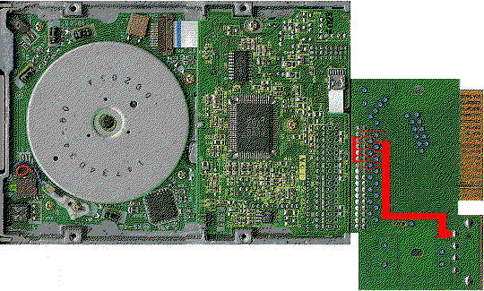

Previous
Next
TOC
FD235HF-815U

Das Modell FD235HF-815U hat ein paar Gemeinheiten auf Lager :-(
Das Laufwerk wird mit einem Adapter (mit 3.5 Zoll Stiftleiste und
5 1/4 Zoll Stromversorgungsanschluß) ausgeliefert und hat keinen
eigenen Stromversorgungsanschluß, weiterhin sollte man vermeiden
das man den Stromversorgungsanschluß nachrüstet bevor man das Lauf-
werk entsprechend umkonfiguriert hat - sonst gibt es einen netten
Kurzschluß.
Der Null Ohm SMD-Widerstand S4 muß entfernt werden und die Lötjumper
S1, S2, S3 und S5 müssen mit etwas Lötzinn verbunden werden. Danach
ist das Shugart Interface wieder Normkonform und auf der Platinen-
oberseite kann J2 mit einem 3,5 Zoll Stromversorgungsanschluß nach-
gerüstet werden.
Kapitel Die Diskettenlaufwerke der Fa. TEAC, Seite 7